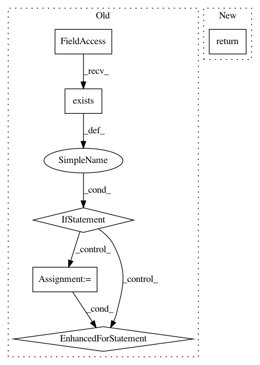

9136cc126984ccc340dbd72e64cb8838182511af,mvpa2/datasets/sources/openfmri.py,OpenFMRIDataset,get_task_descriptions,#OpenFMRIDataset#,104
Before Change
tasks = {}
fname = _opj(self._basedir, "task_key.txt")
if os.path.exists(fname):
for line in open(fname, "r"):
key = line.split()[0]
value = line[len(key):].strip()
key = _id2int(key)
tasks[key] = value
return tasks
def get_bold_run_ids(self, subj, task):
Returns (sorted) list of run IDs for a given subject and task
After Change
strings.
fname = _opj(self._basedir, "task_key.txt")
return _get_description_dict(fname, xfm_key=_id2int)
def get_model_descriptions(self):
Returns a dictionary with the models described in the dataset
In pattern: SUPERPATTERN
Frequency: 3
Non-data size: 6
Instances
Project Name: PyMVPA/PyMVPA
Commit Name: 9136cc126984ccc340dbd72e64cb8838182511af
Time: 2014-11-03
Author: michael.hanke@gmail.com
File Name: mvpa2/datasets/sources/openfmri.py
Class Name: OpenFMRIDataset
Method Name: get_task_descriptions
Project Name: PyMVPA/PyMVPA
Commit Name: 9136cc126984ccc340dbd72e64cb8838182511af
Time: 2014-11-03
Author: michael.hanke@gmail.com
File Name: mvpa2/datasets/sources/openfmri.py
Class Name: OpenFMRIDataset
Method Name: get_scan_properties
Project Name: PyMVPA/PyMVPA
Commit Name: 32c7b798be930eb48ed052bd3254cbe4310b87f6
Time: 2014-10-30
Author: michael.hanke@gmail.com
File Name: mvpa2/datasets/sources/openfmri.py
Class Name: OpenFMRIDataset
Method Name: get_bold_run_ids